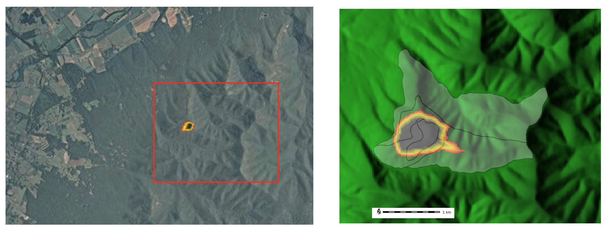
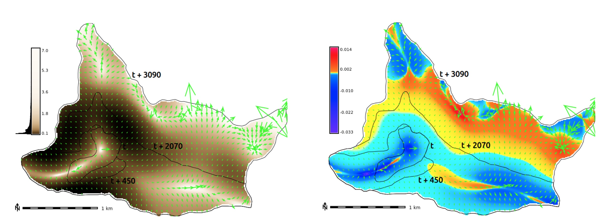

Mapping gradient fields of landform migration
Vaclav Petras, Helena Mitasova, Anna Petrasova
NCSU Open Source Geospatial Research and Education Laboratory
Center for Geospatial Analytics and
Department of Marine, Earth and Atmospheric Sciences
North Carolina State University
Landscape Dynamics
- Water, wind, gravitation, plants, animals and humans continuously change landscape surface
- Land surface processes are poorly understood and our predictive capabilities are limited
- Hazard management decisions are often based on insufficient information

Advances in 3D mapping
- Lidar and sUAS: increased capacity to map 3D landscapes and assess the change on (almost) continuous basis
- Development of tools for terrain time series analysis
- Data for predictive models development, calibration and validation to improve hazards management

Multivariate terrain time series analysis
- 1D lines - transects, horizontal migration of line features: shorelines, dune crests, channels
- 2D rasters - per cell statistics, core and envelope, rate of vertical change
- 3D rasters - space-time cube contour evolution isosurfaces

Hardin, E., Mitasova, H., Tateosian, L., Overton, M., 2014, GIS-based Analysis of Coastal Lidar Time-Series, Springer Briefs in Computer Science, Springer, New York, 84 p.
Analysis of migrating landforms
Horizontal migration is often associated with change in landform geometry which is hard to measure with standard transects
Sand dune on NC coast: Jockey's Ridge 1974 - 2012

Transect based analysis
Jockey's Ridge dune horizontal migration: extracting crests and manually measuring distances along transect, to derive spatially agreggated rates

Similar famous coastal dunes: Slowinski National Park, Poland, Pyla in France, Totori in Japan
Gradient field of horizontal migration
- Measure the rate and direction of landform migration at any point in space and time
- Study spatial pattern of migration vectors
We use the concept of Space-Time Cube where for any contour z=const we can define a function t=g(x,y) where t is the time when this contour is located at the point (x,y). For g(x,y) to be a function, we need to segment time series of contours into non-intersecting segments. Then rate of migration is inverse of the gradient magnitude of the function g(x,y).
Simple experiment
Series of DEMs for tests created using Tangible Landscape

Contours, year 2001, z = 110m

Contours, year 2005, z = 110m

Contours, year 2008, z = 110m

Contours, year 2009, z = 110m

Migrating 110m contour
Set of 110m contours including the ones derived from core and envelope

Envelope: max elevation at each cell (green), Core: min elevation (red)
Define migration areas
Mask external areas outside the range of 110m contour migration

Define migration areas
Mask internal areas outside the range of 110m contour migration

Assign time [year] attribute
Each 110m contour is assigned a time [year] attribute

Interpolate temporal surface
Temporal surface is interpolated from a time series of 110m contours

Migration gradient field
Derived from spatio-temporal surface using derivatives of spline function


gradient lines over time and vectors over migration rates
Dynamic visualization of the gradient field
Shows spatial pattern of mass concentration and dispersal over time
Inspired by Tokyo Wind Speed application by Cameron Beccario.
Derived from air.js source code.
Uses HTML, CSS, JavaScript and D3.js library.
Real world data experiment
Gradient field of horizontal migration at z=12m for Jockey's Ridge dune for years 1974, 1995, 2001, 2008, 2012, contour segmentation is needed

Gradient field and rate of migration
Migration of windward side of Jockey's Ridge dune at different elevations

Other types of temporal fields
Fire isochrones (time series of burned area polygons) and simulation

Fire spread gradient field
Fire spread rate and direction and acceleration
(curvature in the direction of gradient)

Generalization for complex dynamics
- integrating the fields across several elevation contours
- using implicit function f(x,y,t)=const to analyze countour evolution isosurface
- derive 3D gradient lines of fastest change using trivariate splines
Space-Time Cube visualization
Contour evolution represented by isosurfacesz = f (x,y,t) , z=16m and 20m


Conclusion
- visual and quantitative technique
- magnitude and direction of change
- spatial distribution of rate of change
- detection of anomalies
-
analysis of 3D monitoring data or model calibration
- evolving shorelines and islands
- disease spread
- glacier melting
- spatio-temporal interpolation of migrating landforms
Availability
-
Method and use cases:
- Geomorphometry 2015 Conference Proceedings
- open access and CC BY-ND
- can be implemented in any GIS-like software
-
Software source code:
- https://github.com/ncsu-geoforall-lab/spatio-temporal-contour-evolution
- GNU GPL (code can be copied and changed)
- depends only on GRASS GIS (anybody can have what is needed)
- GRASS GIS module (convenient to get, ready to use)


Thank you
This project was funded by the US Army Research Office, grant W911NF1110146.
Everything in the presentation including the presentation itself was created using free, libre and open source software tools.